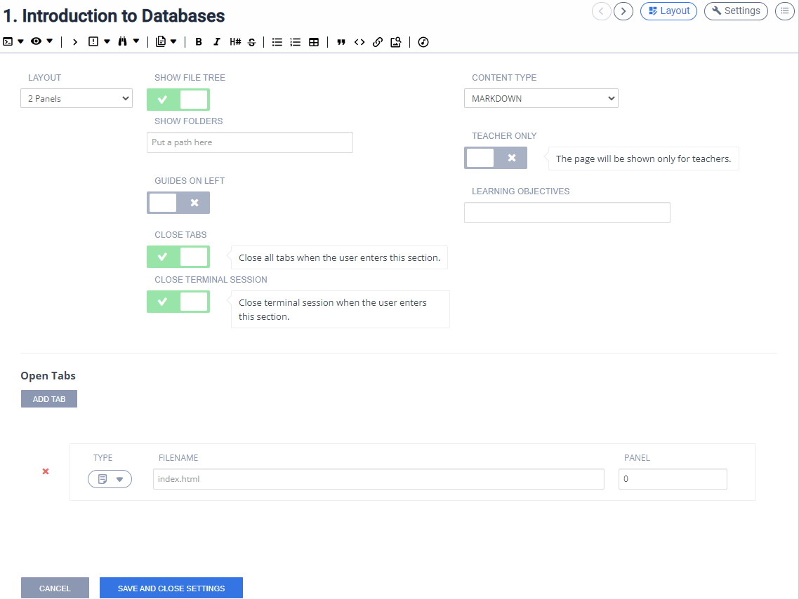
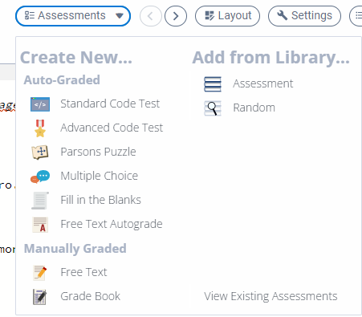
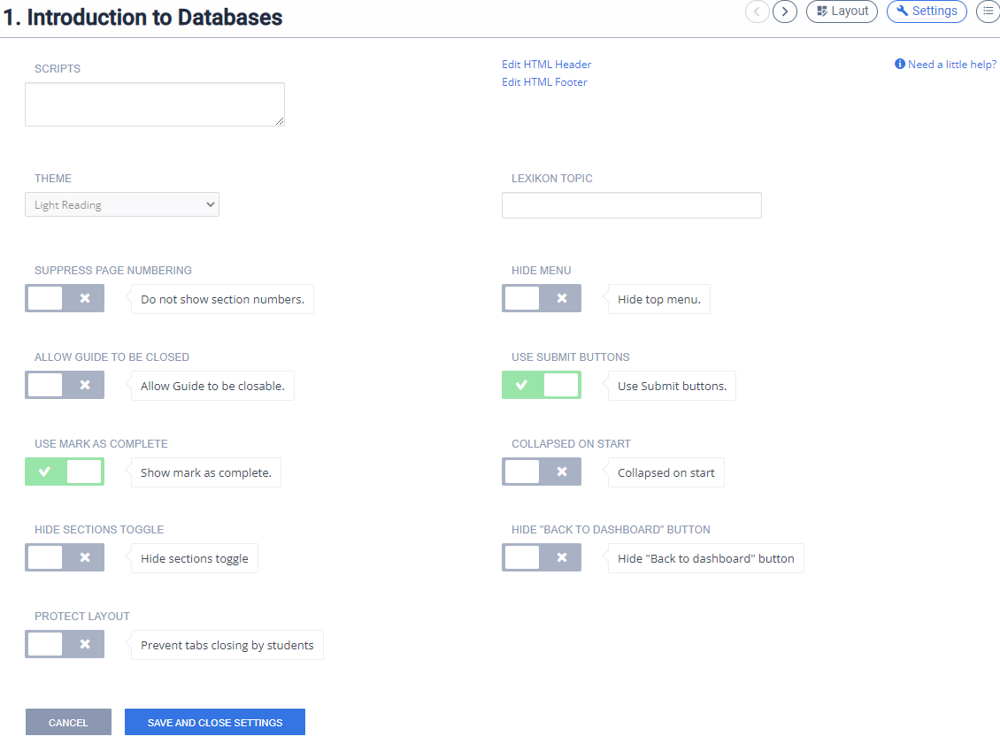
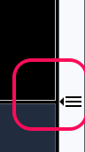

Page editing overview¶
To create new content or to edit existing content, go to the Tools->Guide->Edit menu option.
Use the Split View button to switch into split view mode.
Use the Preview button to switch into preview mode.
When in preview mode, you can quickly switch back to editor mode by selecting the Edit button:

Video: Editing Existing Guides Content
Anatomy of the content editor¶
Below is a screenshot of the editor with the main components highlighted.

Layout¶

Layout settings gives you access to the key functions:
Layout allows you to specify the number of panels/columns you want to choose for this section, or set to Previous to inherit the layout settings from the previous page.
- Show File Tree allows you to define whether to show or hide the file tree.
Show Folders allows you to define specific folders in your project that you wish to be visible when the current section is displayed.
Content Type allows you to write your content in either Markdown or HTML.
Guides on Left allows you to define whether the guides content shows on the left or right.
Teacher Only allows you to show content that only teachers are able to see.
- Close Tabs allows you to close all tabs open from previous section.
Close Terminal Session when Close tabs enabled, allows you the option to retain terminal session from previous section. By default, terminal session will close.
Teacher Only allows you to show content that only teachers are able to see.
Learning Objectives allows you to define learning objectives for this section.
- Open Tabs allows you to specify:
which files you want to automatically open when the current section is displayed,
Preview (including external websites),
Open a Terminal window (including running a terminal command),
which lines (if any) you wish to highlight within each file.
Assessments¶

This allows you to set up assessments and view all assessments in the assignment/project
Settings¶

Scripts allows you to point to one or more .js files in your project (usually located within the .guides folder) that is run when the page is shown. This is especially useful when interacting with a button in a page of content.
Theme allows you to select the default theme for people viewing the content. There is currently a light theme and a dark theme will be added at a later time. Dyslexic users can also choose a special theme from the Settings drop down in the content player.
Lexicon Topic if you use this option, an icon will appear in the toolbar that will load the Lexikon window with the selected topic automatically selected. Students can still access the Lexicon from the Tools>Lexicon menu (unless of course you are restricting the top menu available to them)
Suppress page numbering allows you to suppress the section page numbers when in Play Mode.
Hide Menu allows you to hide the main Codio menu items in the IDE (Codio/Project/File/Edit etc) when the assignment is run in a course).
Allow guide to be closed allows students to be able to close the content. It can be restarted by selecting the Start icon in the file tree:

Use Submit Buttons see Student submission options for more information
Use Mark as Complete see Student submission options for more information
Collapsed on start starts the assignment with the guides pane collapsed. Students can show the content by clicking on the index icon on the right

Hide Section Toggle hides the sections list in your content for the students.
Hide Back to Dashboard button hides this button that would otherwise show on the last page of the guides.
Protect Layout prevents students from closing files in tabs.